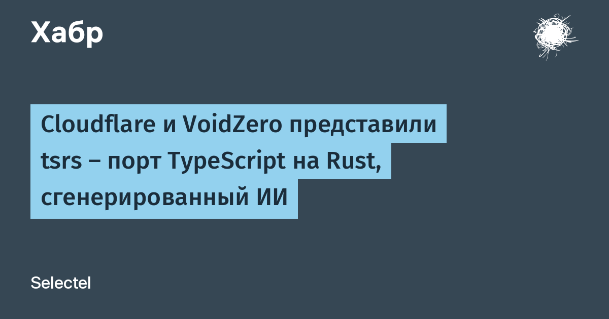

20 октября Cloudflare совместно с купленной летом VoidZero и разработчиком Максом Швенком (Owner.com) представила tsrs — порт компилятора TypeScript на Rust. Работа идёт в тесной координации с командой TypeScript и внутри компиляторного тулчейна Oxc. В анонсе подчёркнуто: это не форк языка — решения о дизайне и направлении TypeScript остаются исключительно за оригинальной командой, а порт обязан строго за ними следовать.
По свежим бенчмаркам (проведённым вместе с командой TypeScript на одинаковых конфигурациях), tsrs до 8 раз быстрее и примерно на 70% экономнее по памяти, чем TypeScript 7.0 при равном числе воркеров проверки типов. Часть оптимизаций уже уехала апстримом в TypeScript 7.1 beta, который сам по себе стал в 2,5 раза быстрее 7.0. По умолчанию tsrs ставит адаптивную конфигурацию под тип машины: больше памяти — ещё выше скорость. Попробовать можно прямо сейчас: `npm install tsrs`.
Раньше перенос TypeScript на другой язык удался ровно один раз — когда сама команда Microsoft переводила его с JavaScript на Go, и то за годы. Теперь, по словам Cloudflare, frontier-модели способны проделать крупномасштабный порт почти самостоятельно за считанные дни. В экосистеме уже появились «слоп-форки», честные порты и полностью переработанные версии TypeScript на Rust и C++ — спрос на скорость оказался сильнее страха перед машинным кодом в критической инфраструктуре.
Ускорение проверки типов экономит время миллионам разработчиков и, что важнее для Cloudflare, позволяет запускать полноценную среду разработки прямо в браузере. А прецедент, пожалуй, ещё важнее: это первый случай, когда ИИ-сгенерированный порт такого масштаба принят в официальный тулчейн крупой компании с благословения команды оригинального языка.